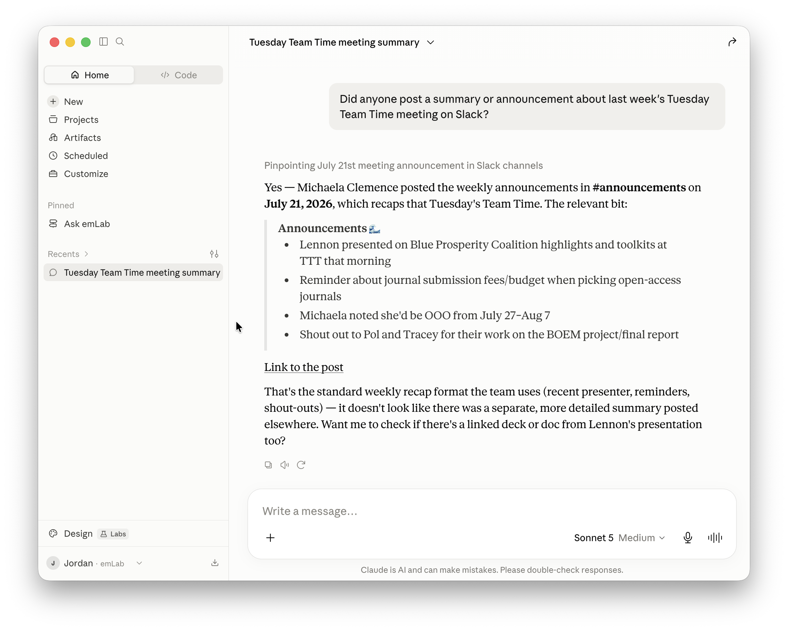
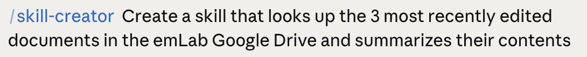

Jordan Wingenroth
08/05/2026
It's something you are good at.
It's when Claude loads a special folder of tools and info that are geared towards a specific task or subject, within a chat or Cowork session.
Skills are sort of like a CLAUDE.md file, but designed for use outside of codebases.
| CLAUDE.md | Skills |
|---|---|
| Added to Claude Code context automatically on load | Skill title and summary always available to Claude Chat and Cowork |
| Lives in the repo, scoped to that codebase | Lives in your account, not accessed by Claude Code |
| A single markdown file that references other files in the repo | A folder: SKILL.md plus any scripts or reference files |
| Can be shared between teammates on a GitHub repo | Can be shared with individuals or the whole emLab team on the Claude app |
Skills are located under the Customize menu. Claude comes with a library out of the box, but they are pretty generic.
There are many ways to create a Skill but let's start simple. I googled "astronomy stars database" and the first result was SIMBAD, so…
Not bad! But it took over 30 seconds. Some of that time was spent
troubleshooting, which is good information to add to the
Skill using
skill-creator.
Let's see how it runs now. I am also going to switch to a less powerful model, Sonnet, which failed to retrieve the data using the original version of the Skill.
Let's see how it runs now. I am also going to switch to a less powerful model, Sonnet, which failed to retrieve the data using the original version of the Skill.
Much better.
Skills are only as powerful as the tools they have to work with.
Connectors (sometimes called MCPs1) are a straightforward way to put Claude in touch with your other software2.
1 Model Context Protocol.
2 For content creation, Claude is set up best for using
Microsoft Word, Excel, and PowerPoint. However, its Google Drive
extension is great for searching and reading files, and it's usually
not too hard to convert output from one filetype to another.
First, navigate to the Connectors menu:
If you haven't set up your connectors yet, clicking "Connect" should take you to the login screen for your account.
Once a Connector is set up, Claude sees it in the chat and should load it for use when it finds it applicable. For example:

Connectors often come equipped with tools adequate for most routine tasks. But if you come up with an outside-the-box idea, creating a Skill can feel like giving Claude superpowers.

---
name: emlab-drive-recent
description: Find and summarize the most recently edited documents in emLab's Google Drive Shared Drive. Use this skill whenever someone asks what's changed, what's new, what people have been working on, or what's recently been edited in emLab's Drive, Shared Drive, or team files — including phrasings like "catch me up on the Drive", "what did the team touch this week", "recent docs", or "summarize the latest files". Also use it when asked to scope any Drive search to the emLab Shared Drive specifically, since the Drive connector cannot discover Shared Drives on its own and needs the drive ID recorded here.
---
# emLab Drive: recent document digest
Find the N most recently edited documents inside emLab's Shared Drive and summarize each one.
Sounds simple. It isn't. Four facts about this Drive and this connector are invisible from the tool schemas, and each one silently breaks the naive approach. This skill exists to encode them.
1. **The connector cannot enumerate Shared Drives.** There is no `list_drives` tool, and search results carry no `driveId` field. The drive ID must be known in advance. It's recorded below.
2. **There is no recursive descendant search.** `parentId = '<id>'` matches *direct children only*. Membership in the drive must be established by walking each candidate's parent chain upward.
3. **`search_files` does not return results in `modifiedTime` order.** Verified by testing — a query for the last 14 days returned a file modified Aug 3 first, then one from Jul 22, then Jul 21, then another from Aug 3. Never trust position in the result array as recency.
4. **Two distinct noise sources will monopolize a naive "recent" list**: a git repo synced into the Drive, and bulk uploads of dozens of PDFs sharing a timestamp. Both are handled below.
## Reference: the emLab Shared Drive
```
Root: 0AHyeeMXswgGLUk9PVA
├── communications 1JHJCPs4VNMe_NdFDeo4CEG3rz7Rm_G5b
├── projects 1NGyPNLniN7zJ-OikxvkqRcvwIlXRhhVC
├── data 1Rc7MU9jpgmf2EeLZ0XiUajDX3rLj_Gk6
└── central-emlab-resources 1GAtpj1g8ZveNttyXG1wsBqqFKi7y80Er
```
Verified 2026-08-02. Drive IDs are properties of the resource — identical for every user, stable across renames and moves. They change only if a folder is deleted and recreated. If a lookup on one of these returns nothing, re-verify the map rather than concluding the drive is empty.
**Two ID traps.**
`parentId = 'root'` is the one identifier that resolves *per-user*: it means the caller's My Drive. It will never match this Shared Drive.
A My Drive root also has the short `0A…` form. In this workspace, `0ACJttOBrUAsjUk9PVA` is a personal My Drive root, not a Shared Drive. So "starts with `0A`" is **not** a test for Shared Drive membership. Only an exact match against `0AHyeeMXswgGLUk9PVA` counts.
## Workflow
### Step 1 — Gather candidates
**Default path — `list_recent_files`.** This is the right discovery tool for "the most recent N," because it actually sorts. Call it with `orderBy: 'lastModified'` and `excludeContentSnippets: true`, then filter by mime type yourself (it takes no mimeType parameter). Because the feed is ordered, work down it and stop as soon as N candidates have passed verification in Step 3.
**Date-bounded path — `search_files`.** Use this only when the request names a period ("what changed in July"). Query:
```
modifiedTime > '<ISO8601>' and modifiedTime < '<ISO8601>' and (
mimeType = 'application/vnd.google-apps.document' or
mimeType = 'application/vnd.google-apps.spreadsheet' or
mimeType = 'application/vnd.google-apps.presentation' or
mimeType = 'application/pdf' or
mimeType = 'application/vnd.openxmlformats-officedocument.wordprocessingml.document' or
mimeType = 'application/vnd.openxmlformats-officedocument.spreadsheetml.sheet' or
mimeType = 'application/vnd.openxmlformats-officedocument.presentationml.presentation' or
mimeType = 'application/msword'
)
```
Because this path returns results unordered, you must collect the full window — paginating via `nextPageToken` — and sort client-side before picking the top N. That is expensive: a 14-day window on this Drive already exceeds one page. So start with a **narrow** window (2–3 days) and widen only if too few survive: 3 days → 7 → 30 → 90. Widening beats paginating.
Those mime types are the readable set `read_file_content` supports, minus images. Images are readable but aren't documents; include them only on request.
### Step 2 — Reject machine-generated files by name
Cheap filter before spending calls on verification. Drop candidates whose titles look like tooling artifacts:
- Lockfiles and config: `renv.lock`, `package-lock.json`, `poetry.lock`, `.Rprofile`
- Two-character hex names (git object shards)
- Bare hashes (32+ hex characters)
Directory-based exclusion happens next, once ancestors are known.
### Step 3 — Verify Shared Drive membership
For each surviving candidate, walk upward via `get_file_metadata` on successive `parentId` values until one of:
- **Reached exactly `0AHyeeMXswgGLUk9PVA`** → in the emLab Shared Drive. Keep it, and keep the ancestor names as its display path.
- **A node has no `parentId`** → a different drive root or a My Drive. Discard.
- **Depth exceeds 10** → stop and discard rather than looping.
While walking, if any ancestor is named `.git`, `node_modules`, `renv`, `.venv`, `__pycache__`, `.Rproj.user`, or `.quarto`, discard immediately and stop walking. These are synced tooling directories, not lab work.
**Cache every parent lookup for the duration of the task.** Candidates cluster in shared subtrees, so ancestors recur constantly. Uncached, this step dominates runtime; cached, it's usually a handful of calls.
A known git working copy lives at `projects / current-projects / mcdr / project-materials / github_local / mcdr / .git`. If files from there keep surfacing, the exclusion isn't firing — check that before concluding the Drive is quiet.
### Step 4 — Collapse bulk uploads
This Drive receives batch imports: on 2026-08-02 roughly forty working-paper PDFs landed in a single folder within a 40-minute span. Left alone, a batch like that fills every slot in a top-3 list with arbitrary members of one event, and the digest becomes useless.
So before selecting: if several candidates share a parent folder and their `modifiedTime` values fall within about an hour, treat the batch as **one** item. Report it as an event — "41 working papers added to `<folder>`" — with two or three representative titles, and let the remaining slots go to genuinely separate edits.
Distinguish this from ordinary collaboration. Three people editing three documents in one shared folder over an afternoon is real activity and should stay as separate entries. The signature of a batch is near-identical timestamps plus near-identical file types.
### Step 5 — Read and summarize
Take the top N surviving items by `modifiedTime` descending (N defaults to 3) and call `read_file_content` on each.
Summarize what each document *says* — its argument, findings, or purpose. Do not describe its structure. "Compares three carbon pricing scenarios and finds the intermediate one dominates on cost-effectiveness" is useful; "contains an introduction, four sections, and a conclusion" is not.
If a read fails or returns little usable content, say so and move on. A digest that flags its own gaps beats a complete-looking one that quietly guesses. Large files may be truncated by the tool — note when a summary rests on a partial read.
## Output format
```markdown
## Recently edited in emLab Drive
**1. [Title]** — modified [date]
`[folder path]`
[2–4 sentences on what it contains and what it's for.]
[Drive link]
**2.** …
**3.** …
```
Close with one line stating the window searched and what was excluded — e.g. "Searched the last 3 days; collapsed a 41-file paper upload into one entry and skipped a synced git repo under projects/current-projects/mcdr."
That closing line carries more weight than it looks. It tells the reader whether a thin digest means a quiet week or an over-aggressive filter, and those call for opposite responses.
## Adapting the request
- **A different count** ("top 5", "just the latest thing") — N is a parameter, not a constant.
- **A scoped subtree** ("recent stuff in communications") — start from that folder's ID and skip Step 3 entirely; direct-children queries need no verification. Recursion still isn't available, so descend explicitly if asked.
- **"Edited by me"** — `list_recent_files` with `orderBy: 'lastModifiedByMe'`. Same client-side mime filtering.
- **A date range** — `modifiedTime` supports `<`, `<=`, `>`, `>=`, `=`, `!=` against RFC 3339 timestamps. The date fields cannot be compared to each other, only to literals.
## Handling sensitive content
Because this walks a whole team's Drive, it will surface things the person asking hasn't seen. Two habits.
**Summarize at the level the request needs.** "A draft response to reviewer comments on the Nature Comms submission" answers "what's changed lately" without reproducing an argument for someone who hasn't read the paper. Personnel documents, salary information, and unpublished results deserve the shortest accurate description, not a thorough one.
**Never reproduce a credential.** If a file appears to contain an API token, a `.git/config` with an embedded key, or a password list, report that it appears to contain a credential and where it lives — then stop. Echoing the value into chat output copies the secret somewhere new, which makes the exposure worse rather than better.